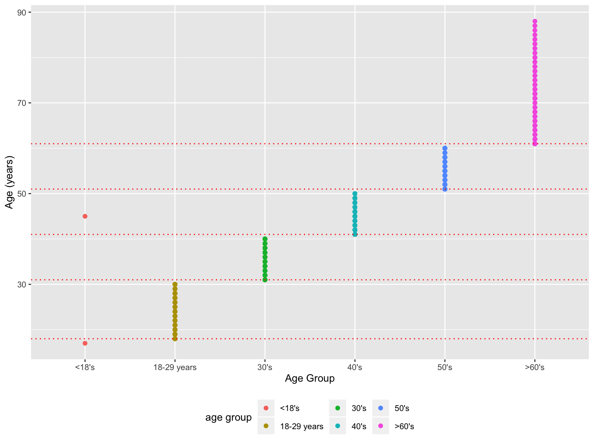
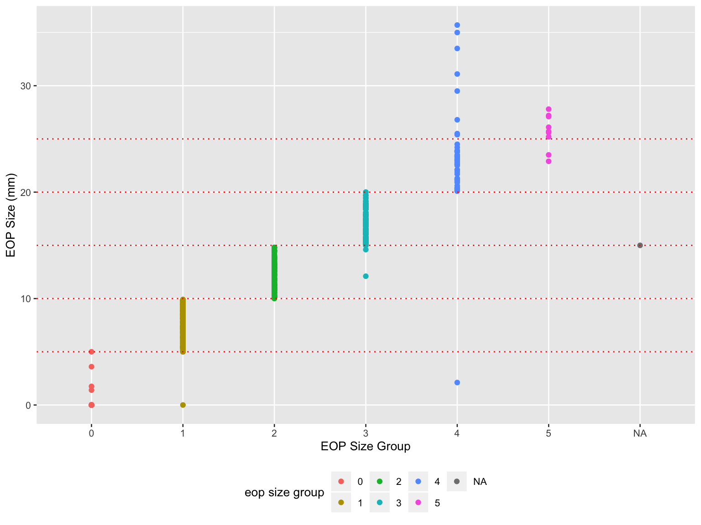
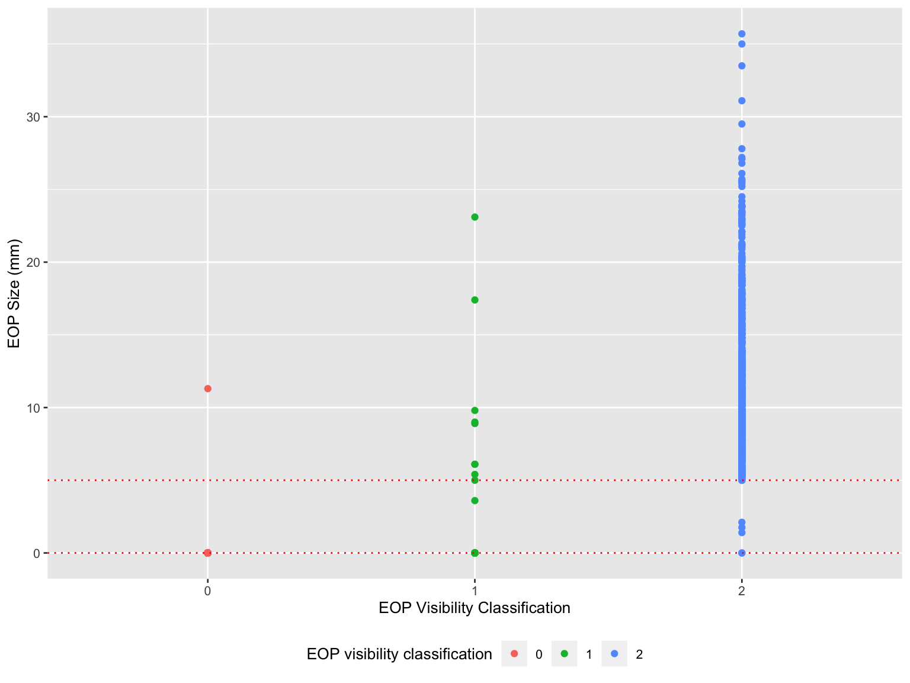
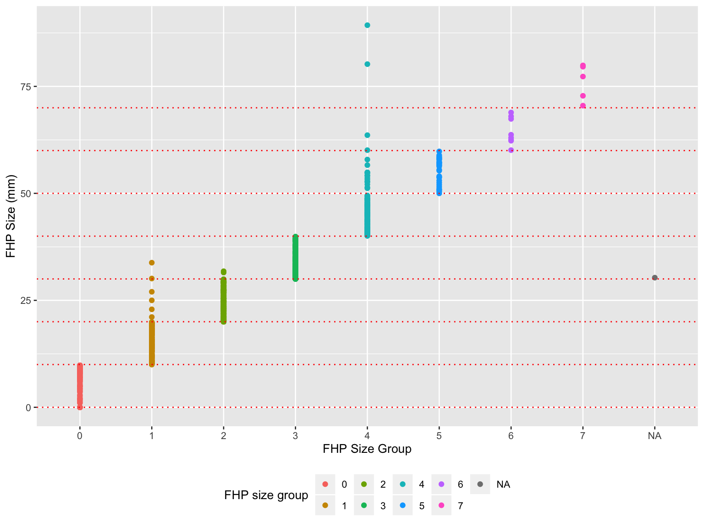
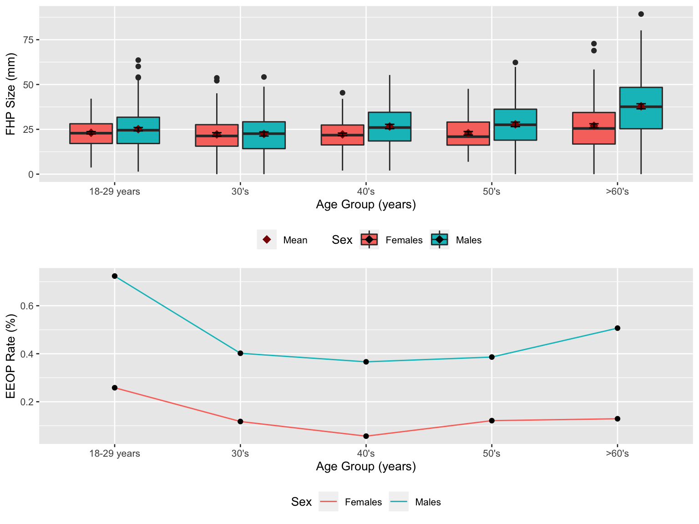
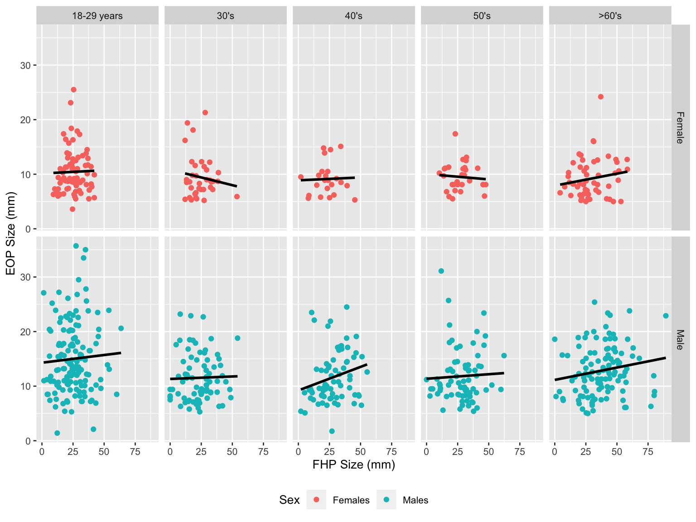
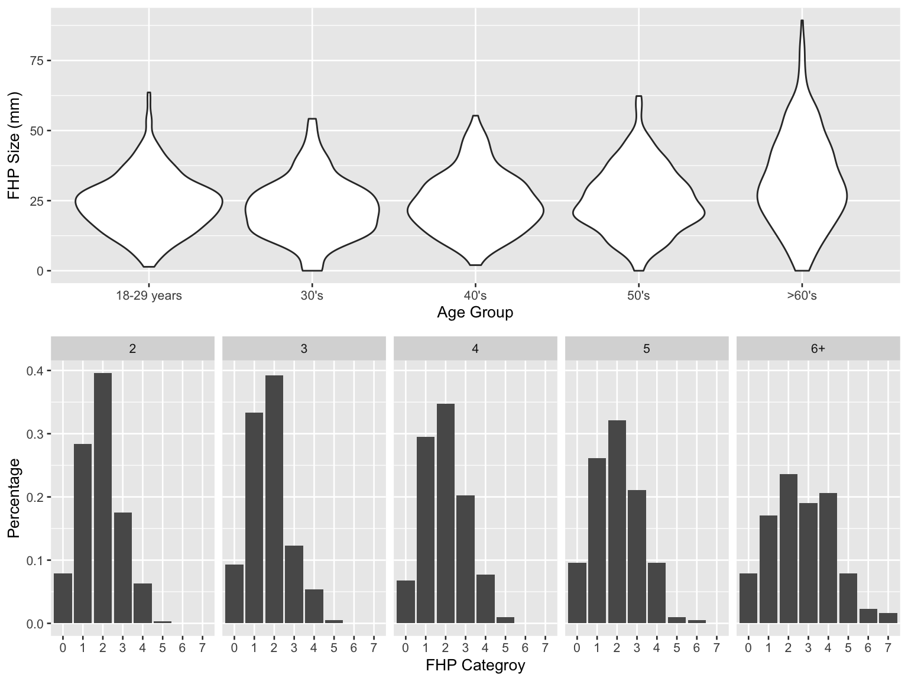

In 2018, Nature Scientific Reports published an article by Australian researchers published describing the relationship between posture and “enlarged protuberances”, especially among younger subjects. In this study, the researchers analyzed data from individuals with different ages and sex, and concluded that prominent exostosis were more prevalent in young adults than older groups. However, skepticism arose about this study and a published author correction indicated errors existed in the original work. In this project, dataset from this study was used to test whether issues exist and reproduced results are consistent with that reported in the article.
raw_data =
read_excel("./data/p8105_mtp_data.xlsx", skip = 8)mtp_data =
raw_data %>%
janitor::clean_names() %>%
replace_na(list(eop_size_mm = 0, eop_shape = 0)) %>%
mutate(
sex = as.character(sex),
age = as.integer(age),
age_group = case_when(
age_group %in% c('6', '7', '8') ~ '6+',
TRUE ~ age_group ),
age_group = factor(age_group, levels = c('1', '2', '3', '4', '5', '6+')),
eop_size = factor(eop_size, levels = c('0', '1', '2', '3', '4', '5')),
eop_visibility_classification = factor(eop_visibility_classification, levels = c('0', '1', '2')),
eop_shape = as.character(eop_shape),
fhp_category = factor(fhp_category, levels = c('0', '1', '2', '3', '4', '5', '6', '7'))
)
str(mtp_data)## Classes 'tbl_df', 'tbl' and 'data.frame': 1221 obs. of 9 variables:
## $ sex : chr "1" "1" "0" "1" ...
## $ age : int 18 26 22 20 27 28 17 21 25 30 ...
## $ age_group : Factor w/ 6 levels "1","2","3","4",..: 2 2 2 2 2 2 1 2 2 2 ...
## $ eop_size_mm : num 14.8 17.1 0 23.9 0 7.9 6.4 9.4 0 16.5 ...
## $ eop_size : Factor w/ 6 levels "0","1","2","3",..: 3 4 1 5 1 2 2 2 1 4 ...
## $ eop_visibility_classification: Factor w/ 3 levels "0","1","2": 3 3 2 3 1 3 3 3 1 3 ...
## $ eop_shape : chr "3" "3" "0" "1" ...
## $ fhp_size_mm : num 34.7 32.9 28.1 11 19.3 27.6 30.6 27.8 26.2 21 ...
## $ fhp_category : Factor w/ 8 levels "0","1","2","3",..: 4 4 3 2 2 3 4 3 3 3 ...In the data cleaning, missing values were filled based on given information, variable types were modified and orders were given to factor variables. Individuals older than 60 were all assigned as ‘6+’ under the age_group variables to facilitate further analyses.
The resulting dataset mtp_data contains 1221 observations (i.e. the number of participants) and 9 variables. Key variables: The average age was 45.5118755. The average EOP size was 6.8330549 mm. The average FHP size was 26.1013416 mm. NA exist in the fhp_size_mm and eop_shape. Since no information was provided, NA’s here were left blank.
A table below shows the age and gender distribution.
mtp_data %>%
mutate(
age_group = case_when(
age_group == '1' ~ 'less than 18',
age_group == '2' ~ '18-30',
age_group == '3' ~ '31-40',
age_group == '4' ~ '41-50',
age_group == '5' ~ '51-60',
age_group == '6+' ~ 'larger than 60'
)
) %>%
group_by(sex, age_group) %>%
summarize(n = n()) %>%
pivot_wider(
names_from = sex,
values_from = n
) %>%
knitr::kable(
col.names = c('Age', 'Female', 'Male'),
)| Age | Female | Male |
|---|---|---|
| 18-30 | 151 | 152 |
| 31-40 | 102 | 102 |
| 41-50 | 106 | 101 |
| 51-60 | 99 | 101 |
| larger than 60 | 155 | 150 |
| less than 18 | 1 | 1 |
mtp_data %>%
ggplot(aes(x = age_group, y = age, color = age_group)) +
geom_point() +
geom_hline(yintercept = c(18, 31, 41, 51, 61), color = 'red', linetype = 'dotted') +
xlab('Age Group') +
ylab('Age (years)') +
scale_color_hue(name = "age group") +
scale_x_discrete(
labels = c("<18's", "18-29 years","30's", "40's", "50's", ">60's")) +
scale_color_hue(name = "age group",
labels = c("<18's", "18-29 years","30's", "40's", "50's", ">60's"))
mtp_data %>%
ggplot(aes(x = eop_size, y = eop_size_mm, color = eop_size)) +
geom_point() +
geom_hline(yintercept = c(5, 10, 15, 20, 25), color = 'red', linetype = 'dotted') +
xlab('EOP Size Group') +
ylab('EOP Size (mm)') +
scale_color_hue(name = "eop size group")
row_na = which(is.na(pull(mtp_data, eop_size)))
raw_data[row_na,] %>%
knitr::kable()| Sex | Age | Age group | EOP size (mm) | EOP size | EOP visibility Classification | EOP Shape | FHP size (mm) | FHP Category |
|---|---|---|---|---|---|---|---|---|
| 1 | 62 | 6 | 15 | 14.6 | 2 | 2 | 40.8 | 4 |
The NA in x-axis was due to an abnormal value ‘14.6’ in ‘EOP size’ in raw dataset which supposed to be 0 ~ 5.
mtp_data %>%
ggplot(aes(x = eop_visibility_classification, y = eop_size_mm, color = eop_visibility_classification)) +
geom_point() +
geom_hline(yintercept = c(0, 5), color = 'red', linetype = 'dotted') +
xlab('EOP Visibility Classification') +
ylab('EOP Size (mm)') +
scale_color_hue(name = "EOP visibility classification")
mtp_data %>%
ggplot(aes(x = fhp_category, y = fhp_size_mm, color = fhp_category)) +
geom_point() +
geom_hline(yintercept = c(0, 10, 20, 30, 40, 50, 60, 70), color = 'red', linetype = 'dotted') +
xlab('FHP Size Group') +
ylab('FHP Size (mm)') +
scale_color_hue(name = "FHP size group")
row_na = which(is.na(pull(mtp_data, fhp_category)))
raw_data[row_na,] %>%
knitr::kable()| Sex | Age | Age group | EOP size (mm) | EOP size | EOP visibility Classification | EOP Shape | FHP size (mm) | FHP Category |
|---|---|---|---|---|---|---|---|---|
| 0 | 51 | 5 | NA | 0 | 0 | NA | 30.3 | 30.8 |
The NA in the x-axis was due to an abnormal value ‘30.8’ in ‘FHP Category’ in raw dataset which supposed to be 0 ~ 7.
fhp_plot =
mtp_data %>%
filter(age_group != '1') %>%
drop_na(fhp_size_mm) %>%
ggplot(aes(x = age_group, y = fhp_size_mm, fill = sex)) +
geom_boxplot() +
stat_summary(
fun.y = mean, aes(colour = "Mean"),
geom = "point",
shape = 18,
size = 3,
position = position_dodge(width = 0.75)) +
stat_summary(
fun.data = mean_se,
geom = "errorbar",
width = 0.15,
position = position_dodge(width = 0.75)) +
scale_fill_hue(
name = "Sex",
labels = c("Females", "Males")) +
scale_colour_manual(
values = c("Mean" = "darkred"),
labs(colour = '')) +
xlab('Age Group (years)') +
ylab('FHP Size (mm)') +
scale_x_discrete(
labels = c("18-29 years","30's", "40's", "50's", ">60's"))eeop_plot =
mtp_data %>%
filter(age_group != '1') %>%
mutate(
eeop = case_when(
eop_size_mm > 10 ~ 'y',
eop_size_mm <= 10 ~ 'n'
)
) %>%
group_by(age_group, sex) %>%
count(eeop) %>%
mutate(rate = prop.table(n)) %>%
filter(eeop == 'y') %>%
ggplot(aes(y = rate, x = age_group)) +
geom_line(aes(group = sex, color = sex)) +
geom_point() +
scale_color_hue(
name = "Sex",
labels = c("Females", "Males")) +
xlab('Age Group (years)') +
ylab('EEOP Rate (%)') +
scale_x_discrete(
labels = c("18-29 years","30's", "40's", "50's", ">60's"))# create a two-panel figure and show the plot
fhp_plot / eeop_plot
From upper panel, mean value equals to median in most of the age groups, indicating a non-skewed distributions in those data. For females in 30’s, 50’s, >60’s group, data distributions were right-skewed. Also, the males had relatively larger FHP size than females.
From lower panel, overall trend of EEOP rate decreased first and then increased. It had largest rate in 18-29 years group and lowest rate in 40’s group. Also, EEOP rates in males were higher than that in females at all age groups.
fhp_eop_plot =
mtp_data %>%
filter(age_group != '1') %>%
drop_na(fhp_size_mm) %>%
filter(eop_size_mm != 0) %>%
ggplot(aes(x = fhp_size_mm, y = eop_size_mm, color = sex)) +
geom_point() +
geom_smooth(
method = "lm",
color = 'black',
se = FALSE) +
facet_grid(
sex ~ age_group,
labeller = as_labeller(c('0' = 'Female', '1' = 'Male', '2' = '18-29 years',
'3' = "30's", '4' = "40's", '5' = "50's", '6+' = ">60's"))) +
xlab('FHP Size (mm)') +
ylab('EOP Size (mm)') +
scale_color_hue(
name = "Sex",
labels = c("Females", "Males"))
fhp_eop_plot
For male group, the EOP size and FHP size had slightly positive relationships in all age groups. However, for female group, the relationships were not identical among different age groups.
mtp_data %>%
mutate(
age_group = case_when(
age_group == '1' ~ 'less than 18',
age_group == '2' ~ '18-30',
age_group == '3' ~ '31-40',
age_group == '4' ~ '41-50',
age_group == '5' ~ '51-60',
age_group == '6+' ~ 'larger than 60'
)
) %>%
group_by(age_group) %>%
summarize(n = n()) %>%
knitr::kable(
col.names = c('Age Group', 'Sample Size')
)| Age Group | Sample Size |
|---|---|
| 18-30 | 303 |
| 31-40 | 204 |
| 41-50 | 207 |
| 51-60 | 200 |
| larger than 60 | 305 |
| less than 18 | 2 |
# overall mean
mean(pull(mtp_data, fhp_size_mm), na.rm = TRUE)## [1] 26.10134# mean and std by sex group
mtp_data %>%
mutate(
sex = case_when(
sex == '0' ~ 'Female',
sex == '1' ~ 'Male'
)
) %>%
group_by(sex) %>%
summarize(
maen = mean(fhp_size_mm, na.rm = TRUE),
sd = sd(fhp_size_mm, na.rm = TRUE)
) %>%
knitr::kable(
col.names = c('Sex', 'Mean (FHP size)', 'Standard Deviation (FHP size)')
) | Sex | Mean (FHP size) | Standard Deviation (FHP size) |
|---|---|---|
| Female | 23.72580 | 10.61789 |
| Male | 28.51234 | 14.66670 |
mtp_data %>%
mutate(
eeop = case_when(
eop_size_mm > 10 ~ 'EEOP',
eop_size_mm <= 10 ~ 'Not EEOP'
)
) %>%
count(eeop) %>%
mutate(rate = prop.table(n)) %>%
knitr::kable(
col.names = c('EEOP or not', 'Number', 'Prevalence')
)| EEOP or not | Number | Prevalence |
|---|---|---|
| EEOP | 392 | 0.3210483 |
| Not EEOP | 829 | 0.6789517 |
eop_size_mm. The EEOP prevalence from available data was 32%, which has 1% difference from what authors reported.fhp_violin =
mtp_data %>%
filter(age_group != '1') %>%
drop_na(fhp_category) %>%
ggplot(aes(x = age_group, y = fhp_size_mm)) +
geom_violin() +
xlab('Age Group') +
ylab('FHP Size (mm)') +
scale_x_discrete(
labels = c("18-29 years","30's", "40's", "50's", ">60's"))
fhp_col =
mtp_data %>%
filter(age_group != '1') %>%
drop_na(fhp_category) %>%
group_by(age_group) %>%
count(fhp_category) %>%
mutate(rate = prop.table(n)) %>%
ggplot(aes(x = fhp_category, y = rate)) +
geom_col() +
xlab('FHP Categroy') +
ylab('Percentage') +
facet_grid(~age_group)
fhp_violin / fhp_col
mtp_data %>%
filter(age_group != '1') %>%
drop_na(fhp_category) %>%
group_by(age_group) %>%
count(fhp_category) %>%
mutate(rate = prop.table(n)) %>%
filter(age_group == '6+' & fhp_category %in% c('4', '5', '6', '7')) %>%
summarize(sum = sum(rate)) %>%
knitr::kable(
col.names = c('Age Group', 'Percentage of FHP >40 mm')
)| Age Group | Percentage of FHP >40 mm |
|---|---|
| 6+ | 0.3245902 |
Based on the available data, lots of misclassification were found in category variables and mistakes were found in data entry, which made the data analyses in original report questionable. Besides, some statistical values were found not consistent with that reported in the article. Although board trends were consistent with the article that younger individuals had higher EEOP rates, we still cannot conclude cell phones cause hron growth. Extra data showing the prevalence of cell-phones usage among different age groups will be necessary to better address such hypothesis.